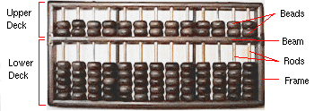
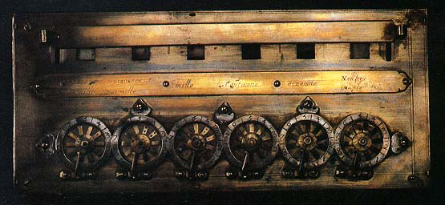
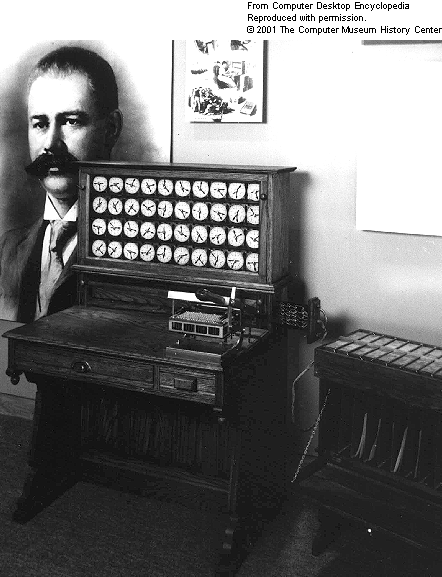
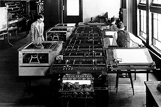
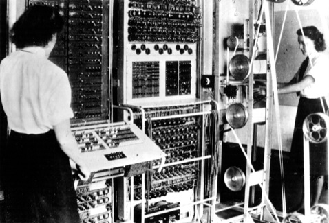
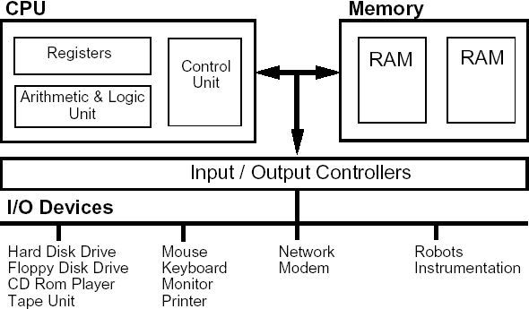
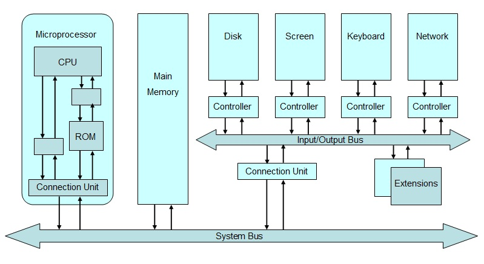
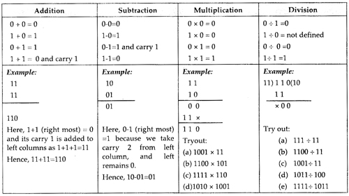
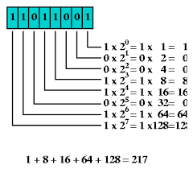

rahul
rahul.naskar@gmail.com
A Brief History

2000 B. C. The Abacus (Chinese)

1642 A. D. Pascaline (Biaise Pascal)

1820 A. D. Analytical Engine (Charles Babbage)

1890 A. D. Electro Mechanical Machines (Herman Hollerith)

1930 A. D. Electronic "Computer" (Vannevar Bush)

1943 A. D. The Turing Machine (Alan Turing)

1949 A. D. EDSAC (John von Neumann)
Why Computer?
Speed
Accuracy
Endurance
But very importantly!!!
It's dumb
Computer Hardware
Major Components

- System Unit
- Memory
- Input/Output devices
- Communication Devices

Maths for the common man…aka (Not again!!!)
38 + 11 = 49
Maths for the computer…aka (Binary Mathematics)
100110
+ 1011
110001
Interesting types

Understanding it

TODO Summing it up
[ ]Review[ ]History[ ]From the Von Neumann Architecture till Now
[ ]Why is the computer unique[ ]3 things that would have been impossible without computers
[ ]Computer Hardware[ ]How does the CPU work[ ]Why is Memory Required in Computers[ ]What is a bus in computer?
[ ]Binary Maths[ ]How to tackle fractions in Binary Maths
See you on 6th…
rahul.naskar@gmail.com